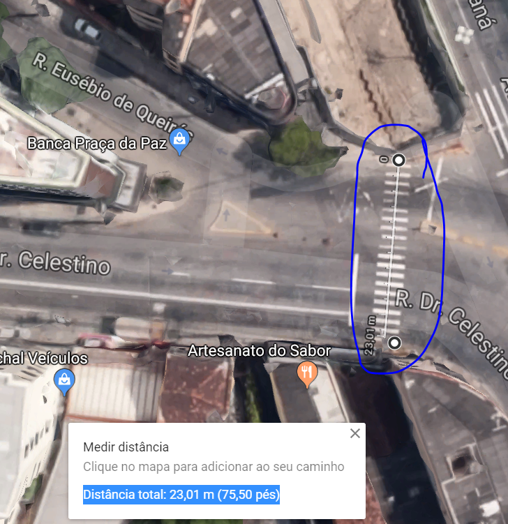

Problema 1
Foto aérea com o problema assinalado na região atual
Medição da largura atual da rua ou acesso a calçadas
Distância total: 23,01 m
Descrição do problema atual
A largura da faixa de pedestre poderia ser menor.
Foto com a sugestão de melhoria

Descrição da melhoria
Dividir a travessia em dua etapas